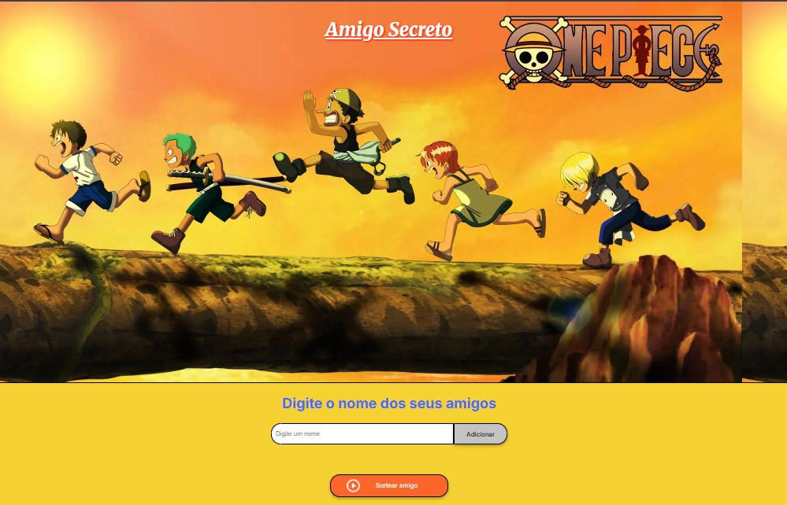

Estudante de Análise e Desenvolvimento de Sistemas (4º período), em transição de carreira para tecnologia.
Tenho foco em desenvolvimento backend, trabalhando com consumo de APIs, manipulação de dados e integração com banco PostgreSQL.
Busco minha primeira oportunidade como desenvolvedor para aplicar na prática o que venho construindo em projetos reais.
Minha jornada começou fora da tecnologia, atuando na área de logística, segurança patrimonial e administrativo pós Serviço no Exercito como soldado 1ª Classe. Essas experiências me trouxerem organização, disciplina e pensamento analítico — habilidades que hoje aplico diretamente no desenvolvimento de software.
Atualmente desenvolvo aplicações pessoais para facilitar meu dia a dia em casa utilizando JavaScript, .NET (VB.NET / ASP.NET Web Forms), C# entre outras de acordo com o projeto que imagino fazer e integrando APIs externas, e próprias tratando dados e persistindo informações em banco PostgreSQL e MySql de acordo com a necessidade.
Tenho interesse em backend, arquitetura de sistemas e banco de dados, porém aberto a novas oportunidades e aprendizados, sempre buscando evoluir com projetos práticos e desafios reais.
Projeto criado usando CSS, HTML e JavaScript. Foi um desafio dado durante o curso G8 ONE.
Ele trabalha com logica de programação.

Interface para seleção de um em um jogo de amigo secreto.
Email: wbsc.dev@gmail.com
LinkedIn: linkedin.com/in/wilkerbibiano-dev
GitHub: github.com/wilker-bibiano